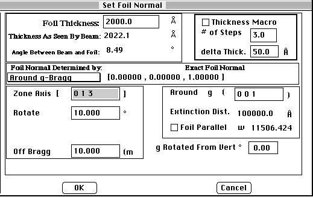

Distributed By: Virtual Labs
Sample Dialog Box (Foil Normal)
PATH...Parameter Menu:Sample Normal
With the ability to calculate Monte Carlo simulations, dislocation images,
and dynamic CBED calculations, it has become imperitive to closely define
the foil normal and the foil thickness, the sample dialog box has been designed
to achieve this goal.

Author: J.ames
T. Stanley
 Desktop
Manual:Dialog Boxes
Desktop
Manual:Dialog Boxes
Distributed By: Virtual Labs
Last Updated:1/12/96 Sat, Apr 27, 1996